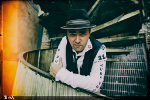
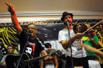
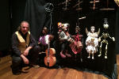
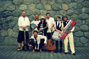
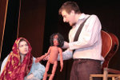

2.6. 2018, Roztoky u Prahy

Mikkim
Producent, muzikant a DJ. Hraje našlápnutý bass music okořeněný prvky ragga, jungle a drum and bassu.
Callhouse Theory Trio
Fungují od prosince 2017 a hrají classic, folk a funky music.

Romba
Skupina, která hraje romsko-balkánský, slovenský, polský, ukrajinský, ruský a rusínský repertoár.
Timudej
Ansámbl, který se pohybuje na rozhraní více hudebních stylů - world music, samby, balkánské muziky, electroswingu, popu či ska.

Pavel Vangeli
Swingující Marionety - představení, kde loutkař zpívá staré swingové písničky z 30. let a mění hlas dle charakteru postav.

Nedloubej se v nose
Kapela usmrkánků z Divadla rozmanitosti v Mostě hraje pro všechny malé a velké smrkáče.

Fígl
Divadlo pro děti s pohádkou O chaloupce z perníku.